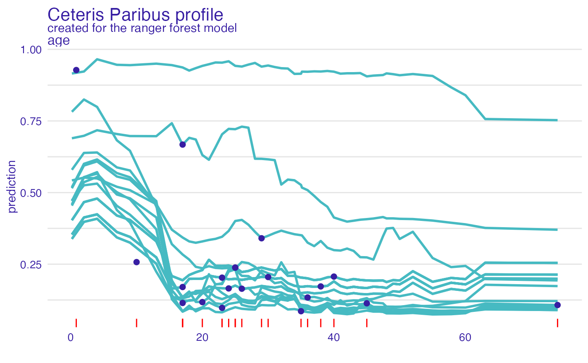

Ceteris Paribus Profiles aka Individual Variable Profiles
Source:R/ceteris_paribus.R
ceteris_paribus.RdThis explainer works for individual observations. For each observation it calculates Ceteris Paribus Profiles for selected variables. Such profiles can be used to hypothesize about model results if selected variable is changed. For this reason it is also called 'What-If Profiles'.
ceteris_paribus(x, ...) # S3 method for explainer ceteris_paribus( x, new_observation, y = NULL, variables = NULL, variable_splits = NULL, grid_points = 101, variable_splits_type = "quantiles", ... ) # S3 method for default ceteris_paribus( x, data, predict_function = predict, new_observation, y = NULL, variables = NULL, variable_splits = NULL, grid_points = 101, variable_splits_type = "quantiles", label = class(x)[1], ... )
Arguments
| x | an explainer created with the |
|---|---|
| ... | other parameters |
| new_observation | a new observation with columns that corresponds to variables used in the model |
| y | true labels for |
| variables | names of variables for which profiles shall be calculated.
Will be passed to |
| variable_splits | named list of splits for variables, in most cases created with |
| grid_points | maximum number of points for profile calculations. Note that the finaln number of points may be lower than |
| variable_splits_type | how variable grids shall be calculated? Use "quantiles" (default) for percentiles or "uniform" to get uniform grid of points |
| data | validation dataset. It will be extracted from |
| predict_function | predict function. It will be extracted from |
| label | name of the model. By default it's extracted from the |
Value
an object of the class ceteris_paribus_explainer.
Details
Find more details in Ceteris Paribus Chapter.
References
Explanatory Model Analysis. Explore, Explain and Examine Predictive Models. https://pbiecek.github.io/ema
Examples
library("DALEX") # smaller data, quicker example titanic_small <- select_sample(titanic_imputed, n = 500, seed = 1313) # build a model model_titanic_glm <- glm(survived ~ gender + age + fare, data = titanic_small, family = "binomial") explain_titanic_glm <- explain(model_titanic_glm, data = titanic_small[,-8], y = titanic_small[,8], verbose = FALSE) cp_rf <- ceteris_paribus(explain_titanic_glm, titanic_small[1,]) cp_rf#> Top profiles : #> gender age class embarked fare sibsp parch _yhat_ _vname_ _ids_ #> 515 female 45.00 2nd Southampton 10.1 0 0 0.5595687 gender 515 #> 515.1 male 45.00 2nd Southampton 10.1 0 0 0.1448038 gender 515 #> 5151 male 0.75 2nd Southampton 10.1 0 0 0.3135247 age 515 #> 515.110 male 2.99 2nd Southampton 10.1 0 0 0.3028164 age 515 #> 515.2 male 4.98 2nd Southampton 10.1 0 0 0.2934793 age 515 #> 515.3 male 7.00 2nd Southampton 10.1 0 0 0.2841757 age 515 #> _label_ #> 515 lm #> 515.1 lm #> 5151 lm #> 515.110 lm #> 515.2 lm #> 515.3 lm #> #> #> Top observations: #> gender age class embarked fare sibsp parch _yhat_ _label_ _ids_ #> 515 male 45 2nd Southampton 10.1 0 0 0.1448038 lm 1# \donttest{ library("randomForest") model_titanic_rf <- randomForest(survived ~., data = titanic_imputed)#> Warning: The response has five or fewer unique values. Are you sure you want to do regression?explain_titanic_rf <- explain(model_titanic_rf, data = titanic_imputed[,-8], y = titanic_imputed[,8], label = "Random Forest v7", verbose = FALSE) # select few passangers selected_passangers <- select_sample(titanic_imputed, n = 20) cp_rf <- ceteris_paribus(explain_titanic_rf, selected_passangers) cp_rf#> Top profiles : #> gender age class embarked fare sibsp parch _yhat_ #> 515 female 45 2nd Southampton 10.1000 0 0 0.85053814 #> 515.1 male 45 2nd Southampton 10.1000 0 0 0.09490975 #> 604 female 17 3rd Southampton 7.1701 1 0 0.47411576 #> 604.1 male 17 3rd Southampton 7.1701 1 0 0.11321362 #> 1430 female 25 engineering crew Southampton 0.0000 0 0 0.69052740 #> 1430.1 male 25 engineering crew Southampton 0.0000 0 0 0.24005121 #> _vname_ _ids_ _label_ #> 515 gender 515 Random Forest v7 #> 515.1 gender 515 Random Forest v7 #> 604 gender 604 Random Forest v7 #> 604.1 gender 604 Random Forest v7 #> 1430 gender 1430 Random Forest v7 #> 1430.1 gender 1430 Random Forest v7 #> #> #> Top observations: #> gender age class embarked fare sibsp parch _yhat_ #> 515 male 45 2nd Southampton 10.1000 0 0 0.09490975 #> 604 male 17 3rd Southampton 7.1701 1 0 0.11321362 #> 1430 male 25 engineering crew Southampton 0.0000 0 0 0.24005121 #> 865 male 20 3rd Cherbourg 7.0406 0 0 0.11517589 #> 452 female 17 3rd Queenstown 7.1408 0 0 0.64019375 #> 1534 male 38 victualling crew Southampton 0.0000 0 0 0.15301516 #> _label_ _ids_ #> 515 Random Forest v7 1 #> 604 Random Forest v7 2 #> 1430 Random Forest v7 3 #> 865 Random Forest v7 4 #> 452 Random Forest v7 5 #> 1534 Random Forest v7 6plot(cp_rf, variables = "age") + show_observations(cp_rf, variables = "age") + show_rugs(cp_rf, variables = "age", color = "red")# }